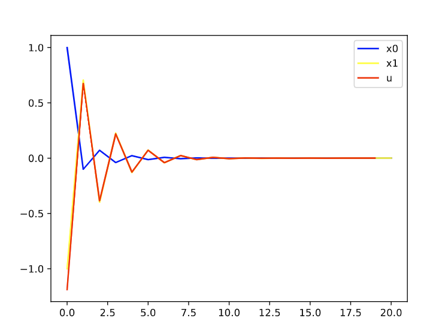
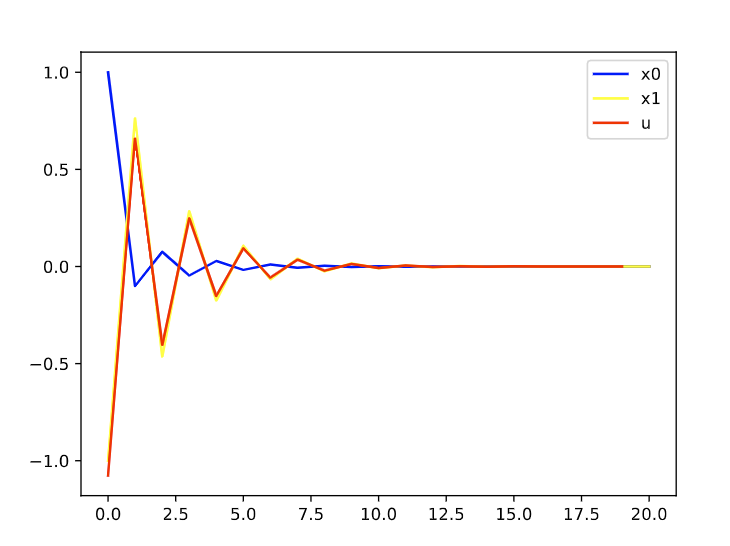
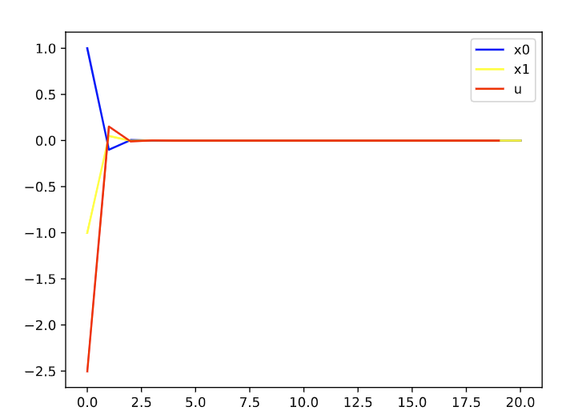
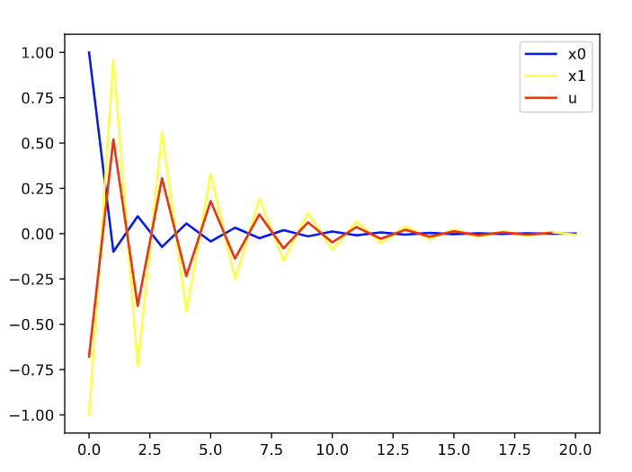

最近在准备拟定自己的研究方向及资格考试答辩，然而，看了很多，发现实在太难确定方向了，旁人都建议说边做边找，做的过程中慢慢再挖掘并补充，且自己以前的确看的太多太杂了(虽然也是不得已而为之)，现在已经是第二年快结束了，该定下来研究方向了，遂不再继续广泛挖掘，直接专注于某一个具体的小点进行深入研究。和实验室师兄一起解决SMPC的问题，这周先整理下MPC相关的笔记和理解。
MPC基本原理
MPC基本目标是保持在\(t\)时刻的状态接近于给定的trajectory，1950s开始，状态空间表示的系统开始流行，所以，当时LQR方法比较流行，取得了一些成果。可以，实际的系统往往是非线性的，且二次惩罚对于约束的处理有问题，不能保持硬约束。
考虑这样一个确定系统：
\[x_{k+1}=f_k(x_k, u_k)\]
其中，\(x_k\)和\(u_k\)都是由一系列有限的标量组成的向量，假设效用函数(cost per stage)是非负的：
\(g_k(x_k, u_k) \geq 0, \quad for \quad all \quad (x_k, u_k)\)
控制和状态的约束为：
\[x_k \in X_k\], \(u_k \in U_k(x_k), \quad k=0,1,\cdots\)
并且我们假设系统可以被控制到初始值且以零cost的方式：
\(f_k(0, \overline{u_k})=0,g_k(0,\overline{u_k})=0, \quad for \quad some \quad control \quad u_k \in U_k(0)\)
MPC的基本思想就是对于给定的初始状态\(x_0 \in X_0\)，我们想要获得一个控制序列\(u_0, u_1, \cdots\)，能够跟踪设定的轨迹，同时来使得状态和控制的约束满足，同时保证促使函数最小。
MPC具体算法流程：
Step1: 求解一个lookahead问题，需要\(x_{k+l}=0\)
Step2: 对于\(\{\overline{u_k}, \overline{u_{k-1}}, \cdots\}\)是计算出来的最优控制序列，只应用\(\overline{u_k}\)作为控制信号，舍弃剩下的控制信号
Step3: 在下一个时刻，MPC继续不断重复该求解过程
MPC基本理念
传统的MPC问题其实就是一个二次规划问题，首先MPC算法中有两个比较关键的参数，一个是预测时域\(N\)，还有一个是控制时域\(P\)，一般经验上来说，\(P\)取为\(01N-0.2N\)，简单的来理解，其实MPC就是一个序列决策问题，给定一个初始状态\(x_0\)，那么假设我们现在给系统一个输入\(u_0\)，那么，由于系统是个动态系统，所以系统的状态会跳到\(x_{k+1}\)，然后重复这个过程，当然，这个过程中，这些控制输入\(u_0, u_1, \cdots\)都是不知道的，但是，由于我们有定义损失函数，例如最简单和常见的就是二次型，所谓的二次型，是从矩阵上来说的，简单的讲，就是一个数的平方，对状态平方，就是表明当前状态离目标状态的距离，对控制输入平方，就是说当前输入离控制输入为\(0\)的距离，这个目标函数是用来衡量我们在控制过程中的损失，我们的目标是想让这个损失越小越好，上面讲过，在这个序列决策问题上，这些控制输入都是不知道的，所以，我们可以用变量符号去替代它们，那么，就可以将每个状态用\(x_0\)，和\(u_i\)表示，然后在构造二次型的损失，这个损失函数也只和\(u_i\)相关，也就是说，你的控制时域有多大，比如为\(P\)，\(u_i\)的下标就有\(P\)个，损失函数是关于\(u_i\)的\(P\)元二次函数。那么可以使用各种优化包来对这样一个多元二次规划问题进行求解。
所以MPC方法其实很简单，毕竟这已经是从上世纪70年代就开始运用起来的控制方法了。但是其multistep lookahead的控制思想还是很有道理的，通过计算未来\(N\)步的损失函数，来获得最优的控制输入，其实和强化学习相比，强化学习更多的是采用不断采样，求解期望，要么近似value function，要么近似policy function，所以，给人感觉其实RL有点笨笨的感觉，像通过各种试探，把解空间都大量搜索一遍，当时RL和DP相比，还是要聪明了不少，效率更高，毕竟是一种近似算法。
优化方法及框架
由于上面所讲的已经将MPC问题转化为一个二次规划问题（可以凸，也可以非凸），所以，可以直接使用常见的优化包来求解。
截止2021年3月20日，我大致看了下几个工具包，主要有：CVXPY(3.2K star)， CVXOPT(729 star)，AMP，CVXGEN等，但是这些我都没咋细看，看了其他两个，一个是OSQP(690 star)，专门用来求解二次规划问题的，还有就是casadi(714 Star)，一个用C++写的，并且有各种语言接口的包。
OSQP的文档中给出了一个MPC的demo，https://osqp.org/docs/examples/mpc.html
各种框架分别适用什么场景还需要以后继续探索，自己其实之前都在搞强化学习，一般都是用梯度下降，对于这些优化问题其实没有咋深入了解，不过基本的凸优化方法和原理还是懂一些的，有大佬看到这里的话可以教教我各框架的应用场景和易用程度及其性能分析。
简单的代码实现
对于之前的一篇文章中所研究的控制对象进行了MPC控制的测试，其系统表示如下：
对于给定的线性系统：\[x_{k+1}=A x_{k}+B u_{k}\]
其中，\(x_{k}=\left[x_{1 k}, x_{2 k}\right]^{T}\)， \(u_{k} \in \mathbb{R}^{1}\)
\(A=\left[\begin{array}{cc} 0 & 0.1 \\ 0.3 & -1 \end{array}\right]\)， \(B=\left[\begin{array}{c} 0 \\ 0.5 \end{array}\right]\)
初始状态\(x_{0}=[1,-1]^{T}\)
实现的代码如下：
1 | import sys |
由于使用这个scipy中的二次规划函数，所以MPC其实很简单，其代码写的很短，如果使用上述所提到的最优化工具箱，那还可以更加简短。
仿真验证控制时域和控制时域对控制器性能的影响
N=20, P=4时：

N=30，P=6

可以发现，基本上差不多。
N=30，P=2

N=30，P=1

MPC算法的计算效率
因为当前MPC其实还是只能做中上层的控制调度，对于要求高的实时控制，还是很难做的，包括实时嵌入式控制等，主要原因在于其每个时刻都需要做一个最优化求解，所以MPC的求解效率很大程度上取决于最优化方法的求解效率，这篇博客用的是NM算法，一个很简单的无约束优化方法。具体效率分析待补充。
MPC与RL的关系
和强化学习相比，强化学习更多的是采用不断采样，求解期望，要么近似value function，要么近似policy function，所以，给人感觉其实RL有点笨笨的感觉，像通过各种试探，把解空间都大量搜索一遍，当时RL和DP相比，还是要聪明了不少，效率更高，毕竟是一种近似算法。